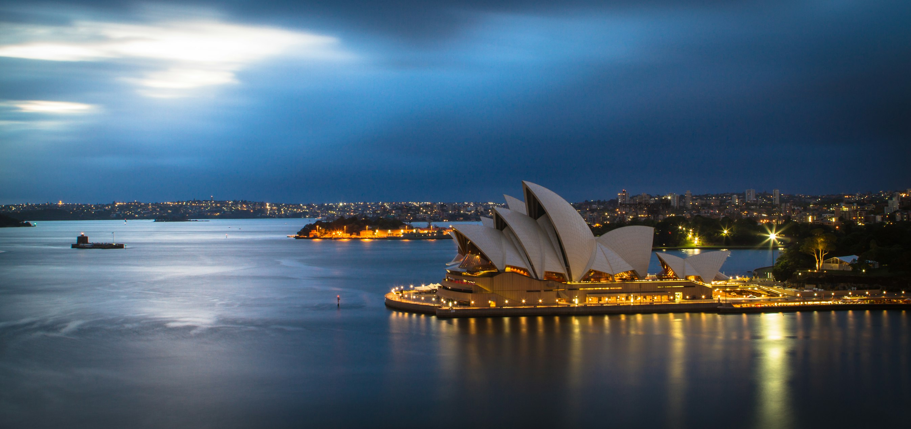

🌟 Introduction to Australia
Australia, fondly known as 'The Land Down Under,' is a country of breathtaking diversity, stunning landscapes, and spectacular global cities. Characterised by its vibrant multicultural society and incredibly high standard of living, it is undeniably one of the most desirable destinations globally.
For Bangladeshis, Australia offers a profound mix of world-class educational opportunities and some of the most transparent, rewarding immigration policies in the world. The warmth of its people, combined with a climate that perfectly balances sunshine and mild winters, creates a profoundly welcoming environment.
Whether you dream of studying at a top-tier Group of Eight (Go8) university in Melbourne or carving out a lucrative career in Sydney's booming tech sector, Australia stands as an unparalleled gateway to securing a prosperous future.

🎓 The Education System
The Australian education system is globally celebrated for its immense focus on practical research, innovation, and industry partnerships. It is home to the 'Group of Eight' (Go8) universities, which consistently rank among the top 100 institutions worldwide.
The qualifications achieved here—from Bachelors to PhDs—are internationally recognised and heavily sought after by top-tier employers. Australian institutions are particularly renowned for excellence in Engineering, Medicine, Information Technology, Environmental Science, and Business.
International students benefit from incredibly supportive campus environments, with extensive resources dedicated to their academic and mental well-being. Furthermore, the Australian Qualifications Framework (AQF) ensures that the standard of education remains uniformly superb across all institutions.
💰 Cost of Living
While the cost of living in Australia is relatively high—particularly in major cities like Sydney and Melbourne—it is perfectly offset by some of the highest minimum wages in the developed world. Earning potential is massive, making the cost of living extremely manageable.
Regional cities such as Adelaide, Perth, and Hobart offer a phenomenally high quality of life at a significantly lower cost. Studying in these regional areas also provides substantial benefits for future immigration and PR points.
International students in Australia are legally permitted to work up to 48 hours per fortnight during the academic semester, and absolutely unlimited hours during semester breaks. This robust earning capability comfortably allows students to cover their rent, groceries, and travel expenses.
📊 Economy & Economic Growth
Australia boasts one of the strongest, most stable, and resilient economies globally, largely driven by its massive natural resources, booming tech industry, agriculture, and robust healthcare sector. It holds a record for consecutive years of unbroken economic growth.
For professionals migrating from Bangladesh, the job market is incredibly lucrative. There are massive, ongoing skill shortages in sectors like Nursing, IT, Civil Engineering, Social Work, and Trades. Consequently, professionals in these domains command exceptionally high salaries.
The strength of the Australian Dollar (AUD) ensures that earning locally translates to significant financial leverage, allowing expatriates to achieve true financial fast-tracking and generational wealth.
👨👩👧👦 Demographics & Culture
Australia is the quintessential multicultural success story. Nearly 30% of its population was born overseas. This vibrant mix of cultures has resulted in phenomenal culinary scenes, widespread tolerance, and incredible societal harmony.
There is a thriving, deeply rooted Bangladeshi diaspora across Australia, particularly in suburbs of Sydney (like Lakemba and Bankstown) and Melbourne. You will easily find halal grocers, authentic Bangladeshi restaurants, and established community networks.
Australians are famously laid-back, sports-loving, and deeply value the concept of a 'fair go' for everyone. The work-life balance here is exceptional, with a strong emphasis on outdoor activities, beach culture, and family time.

🗺️ Tourism & Environment
Australia's natural beauty is unrivaled. It is home to unparalleled wonders such as the Great Barrier Reef, the vast Outback featuring Uluru, and pristine, world-famous beaches like Bondi and Whitehaven.
The extreme geographical diversity allows you to ski in the Snowy Mountains, surf in the Gold Coast, and explore ancient rainforests in Queensland—all within the same country.
For international students and workers, exploring these iconic landscapes is a right of passage and provides an incredible backdrop to your academic and professional journey.
🛂 Visa & Immigration (Study)
Securing an Australian Student Visa (Subclass 500) requires meticulous preparation. Australian Immigration strongly enforces the Genuine Temporary Entrant (GTE) or the new Genuine Student (GS) requirements, assessing your precise motivations for studying in Australia.
Crucially, you must provide a Confirmation of Enrolment (CoE) from your university, alongside robust evidence of English proficiency (like IELTS or PTE), and substantial financial capacity to cover your tuition and living expenses.
Edu Abroad specialises in crafting impeccable visa applications. From university selection to perfecting your Statement of Purpose (SOP) and managing financial documentation, we ensure your application demonstrates absolute genuine intent.
🚀 Post-Graduation & PR Pathways
Australia offers one of the most generous post-study work rights in the world. Upon graduation, international students can apply for a Temporary Graduate Visa (Subclass 485), granting between 2 to 4 years of full-time work rights depending on their degree and location (Regional areas offer longer durations).
This post-study visa is the perfect bridge to Permanent Residency (PR). Australia operates a strictly points-based immigration system (SkillSelect). Gaining local work experience, achieving superior English scores (PTE 79+), and completing a Professional Year (PY) program are excellent methods to skyrocket your PR points.
Visas like the Skilled Independent Visa (Subclass 189) or State Sponsored Visas (Subclass 190/491) offer direct, secure pathways for skilled graduates to become permanent residents, and ultimately, Australian citizens.
❓ Frequently Asked Questions (FAQ)
Q: Is IELTS or PTE better for Australia?
A: Australian Immigration and universities accept both. However, PTE Academic is immensely popular among international students aiming for PR, as it is completely computer-scored and many find it easier to achieve the highest 'Superior' tier (79+ in all bands) for maximum PR points.
Q: Can I bring my spouse/dependents with me?
A: Absolutely. Australia allows international students (especially Masters and PhD students) to bring their dependent spouse and children. Spouses of Masters students typically enjoy full, unlimited work rights!
Q: What is the benefit of studying in a 'Regional Area'?
A: Regional areas (like Adelaide, Perth, Gold Coast, or Hobart) offer lower living costs, a more relaxed lifestyle, an extra 1 to 2 years on your Post-Study Work Visa, and crucial bonus points towards your Permanent Residency application.